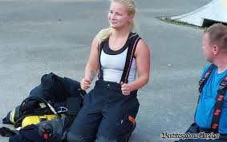

Stammtisch
Platz für maximal 30 Personen in der Heizung — reserviere deinen Tisch.
Heizung an, Bier kalt.

Mittwochs: Goaßenmaß‑Special — Eck Michi mixt die legendäre Goaßenmaß für echte Kenner.
Typisch bayerische Küche, herzliche Atmosphäre und jede Menge Aperol. Laura Berg kocht — gute Laune inklusive. Wanderer sind herzlich willkommen auf ein kühles Bier.
Bei uns gilt: "Mahlzeit? Nein — Maß‑zeit!" Essen rein, Maß her, Sorgen weg.

Laura ist neu am Ettenberg (bei Einheimischen auch liebevoll "Oimberg" genannt) und hat sich entschlossen, die Küche im Heizungsstüberl zu übernehmen. Mit Herz, Handschuhen und einer Portion Bayernsinn kocht sie deftig, ehrlich und immer mit einem Augenzwinkern.
Flo ist Heizungsbauer aus Leidenschaft und gebürtiger Ettenberger — oder wie man hier sagt: ein echter Oimberger. Wenn er nicht gerade die Heizung aufdreht, schenkt er Bier aus, sorgt dafür, dass die Stimmung warm bleibt und legt als DJ mit seiner JBL Box auf — seine legendäre Spotify‑Playlist bringt die Hütte zum Kochen.
Platz für maximal 30 Personen in der Heizung — reserviere deinen Tisch.
Feiern im Freien für bis zu 150 Personen — Hochzeitsbuchungen möglich.
Flo: @floaschauer • Laura: @_lauramaria__